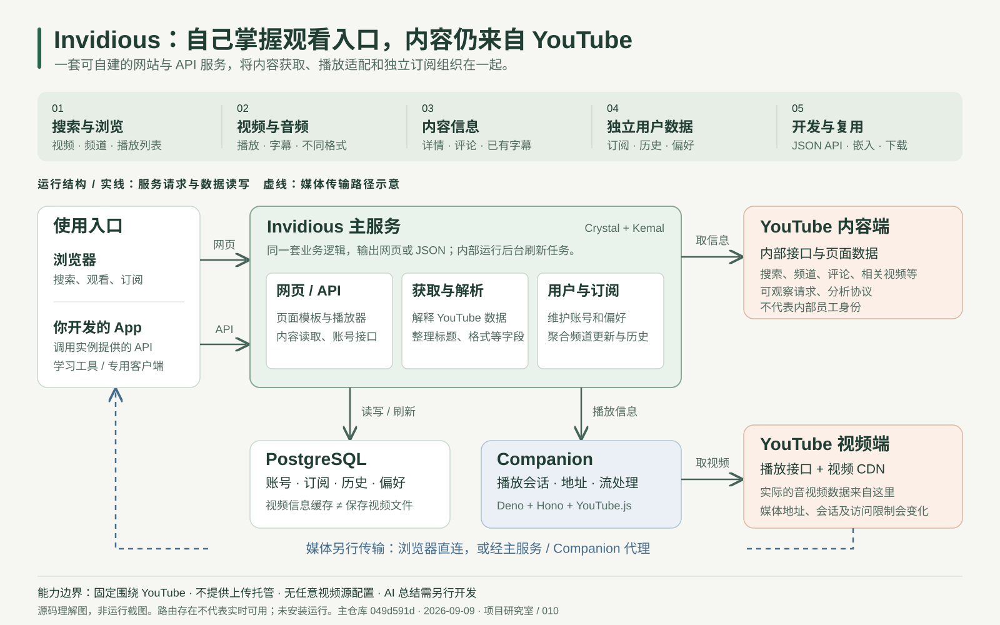

{kind=link}
{kind=link}
YouTube 官方开放 API
面向第三方提供正式文档，按官方要求申请使用。
Invidious 没有以这套 Data API 作为内容获取路径。

图里的网页、API、业务逻辑和后台任务，主要在同一个主服务内运行。基础组合是 Invidious + Companion + PostgreSQL。
02 / 请求如何流动
流程示意 · 不发送真实请求
用户提交关键词，Invidious 从 YouTube 获取搜索结果，再转换成自己的页面或 JSON。
浏览器访问搜索页，或 App 调用搜索 API。
主服务整理地区与过滤条件，请求内部搜索接口。
提取标题、封面、作者和视频 ID 等字段。
网页生成结果列表，API 返回结构化 JSON。
关键理解：全站搜索依赖 YouTube；在自己的订阅中搜索，可以查询实例数据库里的标题和作者。
03 / 我们澄清过的概念
这里的“内部”指 YouTube 自己的网页和 App 使用。开发者可以观察客户端请求、分析参数与返回结构，Invidious 将自己的调用实现公开在源码中。
面向第三方提供正式文档，按官方要求申请使用。
Invidious 没有以这套 Data API 作为内容获取路径。
为客户端提供搜索、频道、播放等数据。可分析请求，但没有面向第三方的稳定使用承诺。
Invidious 负责适配这部分协议与响应。
把内容整理成公开文档中的字段和接口。开发自己的客户端，可以从这里接入。
读取内容；认证后管理实例中的用户数据。
网页与 API 共用业务逻辑，网页不需要先请求一遍自己的公开 API。
/search?q=做饭返回搜索页面/api/v1/search?q=做饭返回 JSON 数据04 / 六组实际能力
搜索视频、频道和播放列表；浏览频道视频、Shorts、直播及社区等入口。
提供播放器、音频模式、DASH 等路径，并支持嵌入页面和下载入口。
整理标题、作者、描述、字幕、文字稿和评论。评论另有 Reddit 来源。
保存订阅、历史、偏好和播放列表，提供导入导出能力。
缓存视频信息，后台刷新频道，预先整理用户的订阅内容，提供 RSS 等入口。
提供视频、搜索、频道、字幕、评论等 API，以及需认证的用户管理接口。
05 / 能力边界
没有通用视频源开关。内容模型、频道结构和播放流程围绕 YouTube 编写。接入其他来源，需要另行开发适配与播放逻辑。
不会。数据库主要保存账号、订阅和部分视频信息。代理视频是转发媒体流，不等于完整归档；项目也不是视频上传托管平台。
搜索和播放经过不同链路。Companion 会话、临时地址、上游访问限制或媒体传输任一环节失败，都可能导致播放失败。
不能。YouTube 的接口变化、限流和封锁仍会影响实例。网站或健康检查可访问，也不能证明每个视频都可播放。
隐私取决于视频是否直连和实例日志等配置；运营者可能记录访问。项目提供无广告界面，但不能理解为自动删除视频中创作者自行植入的商业内容。
06 / 基于现有能力的扩展
下面是架构推导的应用方向，不是已内置功能。
复用：视频、字幕、播放。
新增：双语排版、生词本、练习和学习进度。
复用：元数据和已有字幕。
新增：分段、模型处理、检索与时间戳引用。
复用：频道列表、订阅数据或 RSS。
新增：调度、去重、摘要和通知。
复用：对外 API 和播放资源。
新增：电视、手机或适老界面及兼容处理。
07 / 可核查的依据
研究主仓库：049d591d294e2a43cb32b97a0bb018c2093e5beb。Companion 参考 2026-09-09 读取的 master 源码，未验证两者组合运行。未测实际搜索、字幕获取或播放成功率。上游许可：主仓库声明 AGPL-3.0-only。